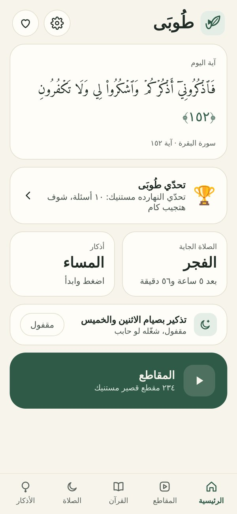
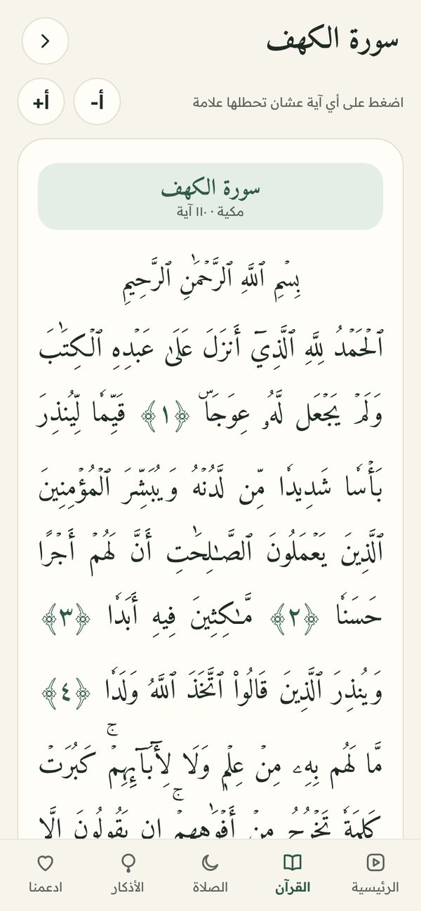
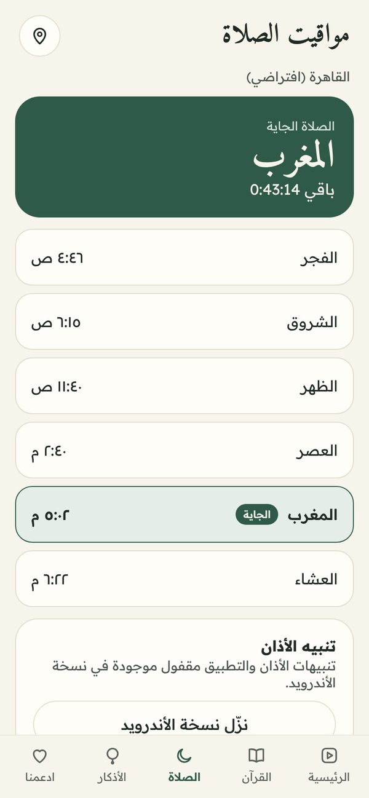
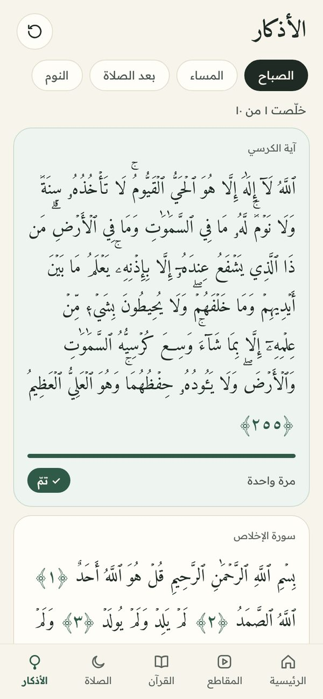
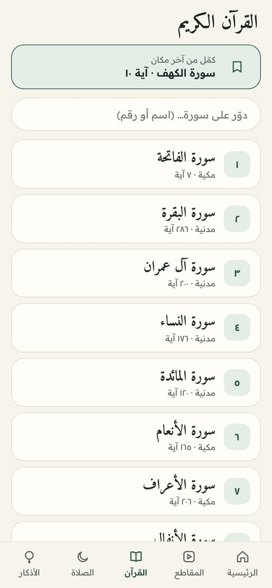
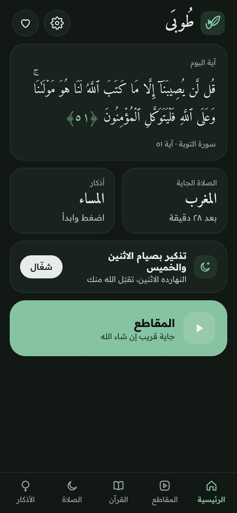

طُوبَى
قصيرة. إسلامية. مفيدة.
بدل ما تقلّب في اللي مالوش لازمة، قلّب في اللي ينفعك. مقاطع قصيرة من مصادر موثوقة، والقرآن الكريم بأصوات أشهر القرّاء، ومواقيت الصلاة، والأذكار في تطبيق واحد. مجاني بالكامل ومن غير إعلانات.






كل اللي محتاجه في مكان واحد
من غير تشتيت، ومن غير إعلانات، ومن غير ما تقلق من مصدر الكلام.
كل يوم حاجة تنفعك
أول ما تفتح التطبيق تلاقي آية اليوم، والصلاة الجاية والوقت الباقي عليها، وأذكار الوقت اللي انت فيه. والمقاطع القصيرة بتقلّب فيها لفوق زي تيك توك من القنوات الرسمية للمشايخ، ومعاها وقفة صغيرة كل ١٠ مقاطع عشان وقتك ميضيعش من غير ما تحس.
- آية جديدة كل يوم
- التلاوات بس، أو مقاطع شيخ معيّن بس
- وقفة كل ١٠ مقاطع: اكتب استفدت إيه، واقرأ ذكر
- احفظ المقاطع اللي عجبتك وشاركها
القرآن الكريم
المصحف كامل بالرسم العثماني. اقرأه بصفحات مصحف المدينة أو بالخط اللي يريّحك، دوّر على أي سورة، كبّر الخط على راحتك، وحط علامة عند آخر آية وصلتلها.
- ١١٤ سورة · ٦٢٣٦ آية
- صفحات مصحف المدينة أو خط واضح
- كمّل من آخر مكان بضغطة
- بيشتغل من غير نت
اسمع القرآن
اسمع تلاوة ١٣ قارئ من أشهر القرّاء، آية آية والآية بتتلوّن قدامك، أو السورة كلها والشاشة مقفولة أو وانت في برنامج تاني. وقّفها وتكمّل من نفس الثانية، ونزّل أي قارئ عشان تسمعه من غير نت.
- العفاسي، السديس، الحصري، المنشاوي، عبد الباسط، المعيقلي، أحمد نعينع، الدوسري، عبدالله كامل، اللحيدان، الطبلاوي، البنا
- المصحف المعلّم: اسمع وردد
- بتكمّل والشاشة مقفولة
- نزّل قارئ أو أكتر أو كلهم، وبحجم أصغر لو حابب
مواقيت الصلاة
المواقيت بتتحسب على موبايلك حسب مكانك، بطريقة الهيئة المصرية العامة للمساحة. وفيه عدّاد للصلاة الجاية واتجاه القبلة.
- تنبيه الأذان على الأندرويد والآيفون والويندوز
- اتجاه القبلة من مكانك
- تذكير بالأذكار، وسورة الكهف يوم الجمعة، وصيام الاثنين والخميس
احسب صلاتك الفايتة
لو فيه سنين مكنتش بتصلي فيها، اكتب المدة ويطلعلك عدد الصلوات اللي فاتتك من كل فرض، وتعلّم على كل صلاة بتقضيها. وقبل ما تبدأ بيشرحلك رأي المذاهب الأربعة في قضاء الصلوات.
- عدّاد لكل فرض ونسبة اللي خلّصته
- أيام العذر الشرعي بتتطرح للبنات
- كل حاجة بتتحفظ على موبايلك بس
الأذكار
أذكار الصباح والمساء وبعد الصلاة والنوم من حصن المسلم. اضغط على الذكر وهو يعدّ معاك، والموبايل يهزّ لما تخلّص، وتقدر تسمعها بصوت الشيخ مشاري العفاسي.
- عدّاد لكل ذكر
- بيفتكر انت وصلت لفين النهارده
- بالصوت، وتقدر تنزّله
مريح لعينك بالليل
فيه وضع ليلي تختاره من الإعدادات، أو تخليه يمشي مع موبايلك. وتقدر تكبّر خط المصحف على راحتك.
- فاتح · ليلي · زي الموبايل
- عربي أو English
مجاني بالكامل
ببلاش ومن غير اشتراكات.
من غير إعلانات
مفيش حاجة هتقطع عليك وانت بتقرا أو بتذكر.
مصادر موثوقة
كل حاجة في التطبيق مكتوب مصدرها، ومحتوى المشايخ من قنواتهم الرسمية.
مين صمّم طُوبَى؟
طُوبَى من تصميم وتطوير محمد صلاح. ومن تصميمه كمان:
نزّل طُوبَى
اختار جهازك.
أندرويد
- دوس على الزرار ونزّل الملف.
- لو الموبايل سألك، اسمح بالتثبيت من المصدر ده.
- دوس تثبيت وافتح التطبيق.
- اسمح بالإشعارات عشان يجيلك تنبيه الأذان.
آيفون وآيباد
- افتح رابط التطبيق من سفاري.
- دوس على زرار المشاركة.
- اختار "إضافة إلى الشاشة الرئيسية".
- دوس "إضافة"، وافتح طُوبَى دايمًا من الأيقونة.
الكمبيوتر (ويندوز)
- نزّل البرنامج وشغّل الملف.
- لو ويندوز قالك إنه حماك، دوس "More info" وبعدين "Run anyway".
- البرنامج بيتثبّت لوحده وبيفتح مع الويندوز، عشان تنبيه الأذان يوصلك في معاده.
أسئلة
هل طُوبَى ببلاش فعلًا؟
أيوه، ببلاش بالكامل ومن غير إعلانات. ولو حبيت تدعمنا، فيه صفحة "ادعمنا" جوه التطبيق.
بيشتغل من غير نت؟
القرآن والأذكار ومواقيت الصلاة بيشتغلوا من غير نت بعد أول مرة تفتح فيها التطبيق. وتقدر كمان تنزّل صفحات المصحف وتلاوة أي قارئ وتسمعها من غير نت. المقاطع بس هي اللي محتاجة نت.
ينفع أسمع القرآن والشاشة مقفولة؟
أيوه. شغّل 🎧 في شريط تشغيل القرآن (أو اختار قارئ "السورة كاملة")، ودوس ▶ واقفل الشاشة. على الأندرويد حدّث التطبيق لآخر نسخة.
منين بتيجي المحتوى؟
نص المصحف من موسوعة القرآن الكريم (QuranEnc.com)، وصفحات المصحف من مجمع الملك فهد، والأذكار من كتاب حصن المسلم، والمواقيت بتتحسب بطريقة الهيئة المصرية العامة للمساحة، والتلاوات من مكتبات صوتيات القرآن، والمقاطع من القنوات الرسمية للمشايخ.
طُوبَى بيجمع بيانات عني؟
لأ. طُوبَى بيعدّ بس مرات فتح التطبيق والمقاطع اللي عليها لايك، من غير اسمك ولا إيميلك ولا مكانك ومن غير cookies. ملاحظاتك وصلواتك الفايتة وكل حاجة تانية بتفضل على موبايلك.
ليه الأندرويد بيقولي إن التطبيق من مصدر غير معروف؟
لأن التطبيق مش منزّل على جوجل بلاي لسه، فالموبايل بيطلب منك تأكد إنك عايز تثبّته. ده طبيعي في أي تطبيق بيتنزّل من برّه المتجر.